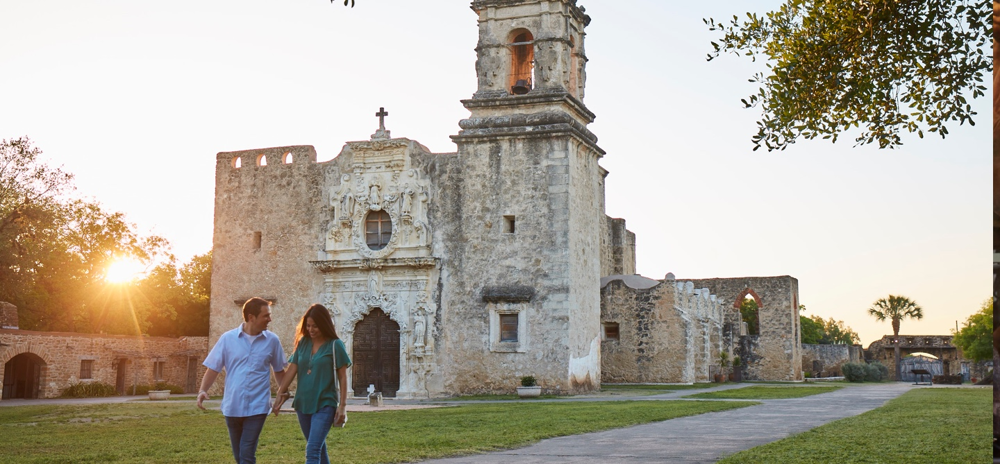

San Antonio
Strength in Diversity
The 5 largest ethnic groups in San Antonio, TX are:
- Population | 2,368,000
- White (Hispanic) | 54.5%
- White (Non-Hispanic) | 23.9%
- Black or African American | 6.59%
- Other (Hispanic) | 6.59%
- Asian | 2.8%
Historic Adventures Await
Capturing the spirit of Texas, San Antonio is a Mecca for history buffs. From its Native American occupation, discovery by Spanish explorers, old missions, the Battle of the Alamo, and the Old West, the history and attractions of this beautiful city can entertain its visitors for days.
Surrounded by many hotels and tourist attractions, it is San Antonio's best-known landmark, featured in the city's flag and seal, and the most visited tourist attraction in the state. San Antonio is nicknamed the "Alamo City." Its yearly Fiesta Week in April commemorates the Texian victory at San Jacinto.
The arrival of the first railroad in 1877 brought migrants from the American South, and Mexican immigrants settled there after the start of the Mexican Revolution in 1910. San Antonio was a major military centre during World Wars I and II, a factor that continued to dominate its economy in subsequent decades.
Gallery